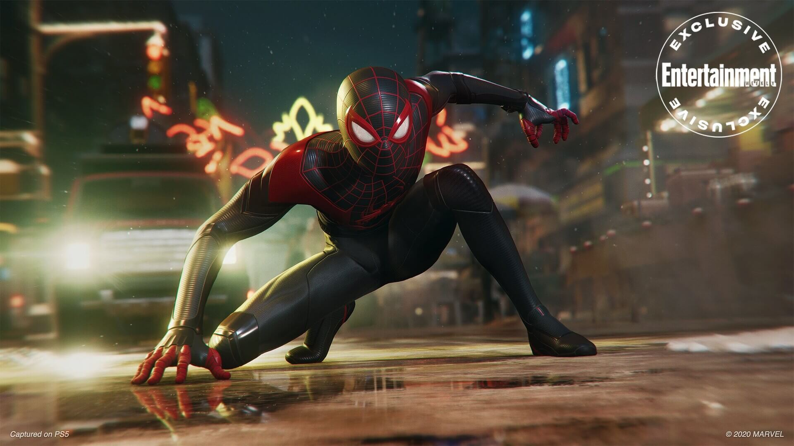
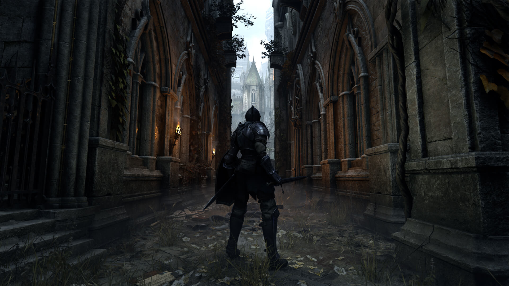

Spider-Man: Miles Morales
Marvel's Spider-Man: Miles Morales is an upcoming action-adventure game developed by Insomniac Games and published by Sony Interactive Entertainment for the PlayStation 4 and PlayStation 5. Based on the Marvel Comics superhero Miles Morales, it will be the second game in the Marvel's Spider-Man series, following Marvel's Spider-Man (2018). It was announced at the PlayStation 5 live reveal event in June 2020, with a version for the PlayStation 4 being announced during PlayStation 5 Showcase on September 16, 2020. It is due to be released on November 12, 2020 and November 19 as a launch title for the PlayStation 5.

Demon's Souls
Demon's Souls is an action role-playing game developed by FromSoftware for the PlayStation 3 under the supervision of SIE Japan Studio. It was published in Japan by Sony Computer Entertainment in February 2009, in North America by Atlus USA in October 2009, and in PAL territories by Namco Bandai Games in June 2010. The game is referred to as a spiritual successor to FromSoftware's King's Field series.
Final Fantasy XVI
Final Fantasy XVI is an action role-playing game set in a fantasy world divided between several factions, including the Twin Kingdoms and Zambrek Empire. The world is suffering from a malady called the Blight, which is kept at bay by the Mothercrystal. A central part of the plot are Eikons, summoned monsters controlled by or manifesting through humans dubbed Dominants; a mystery is the appearance of two Eikons of fire, Phoenix and Ifrit. Gameplay has the protagonist fighting using a combination of melee-based sword attacks and magical abilities.